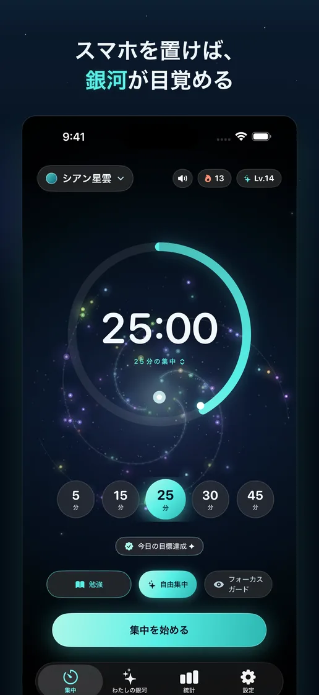
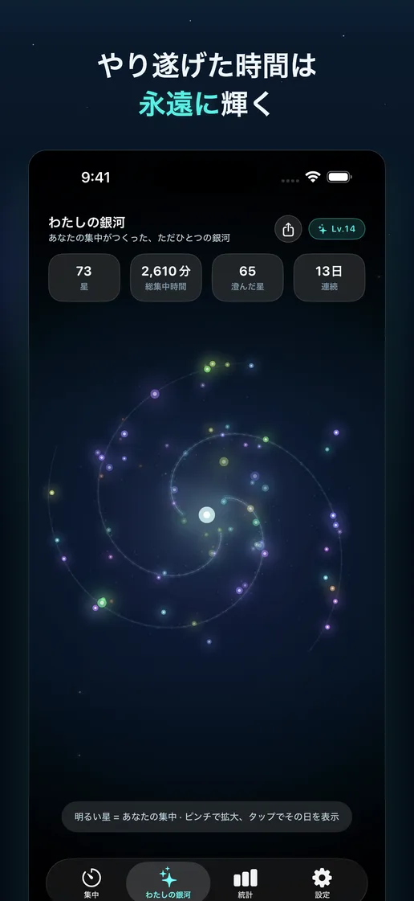
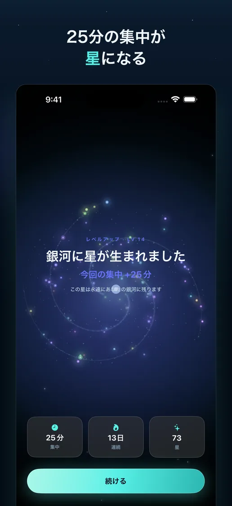
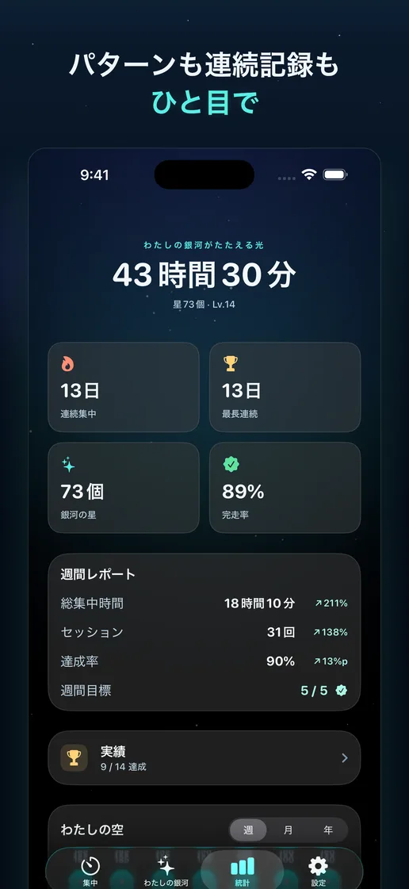
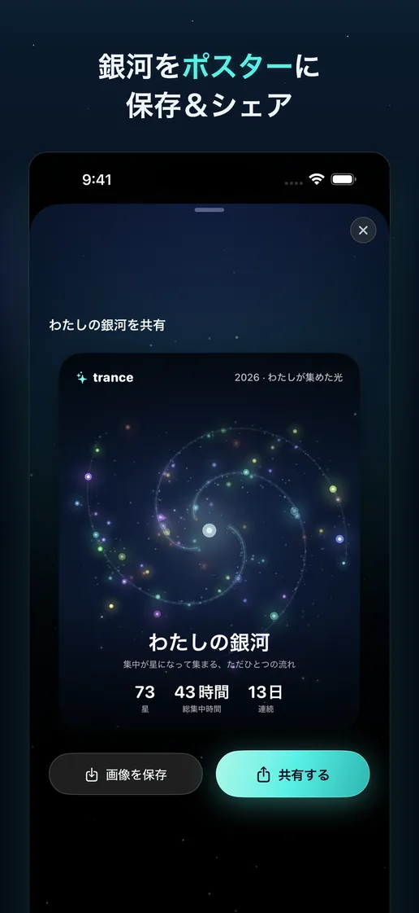
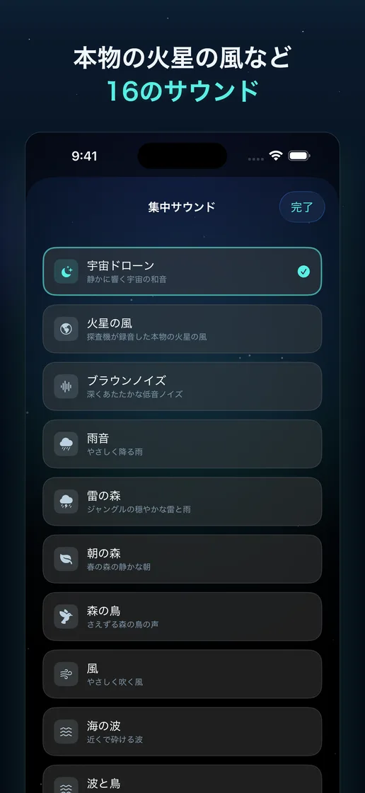

集中ひとつ、星ひとつ
セッションを完了するたびに、時間と色を宿した星が生まれ、自分の銀河に加わります。
集中が星になる時間
タイマーを最後までやり遂げると、今日の集中がひとつの星として残ります。穏やかなサウンドとともに没頭し、積み重なる銀河の中で自分の時間を振り返りましょう。
App Storeで近日公開한국어 · English · 日本語 · iPhone


集中の軌跡
記録を数字だけに閉じ込めず、何度でも眺めたくなる風景に変えます。
セッションを完了するたびに、時間と色を宿した星が生まれ、自分の銀河に加わります。
回転やズームで星を眺めながら、今日と今週の集中がつくった流れをひと目で確認できます。
16種類のサウンド、統計、ポスター、ウィジェット、Live Activityが集中の前後を自然につなぎます。
アプリプレビュー




集中の記録と銀河は端末内だけに保存されます。アプリ改善のため、広告識別子を使わない匿名の利用統計のみ収集し、集中内容や個人の身元とは結び付けません。